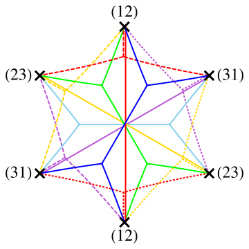
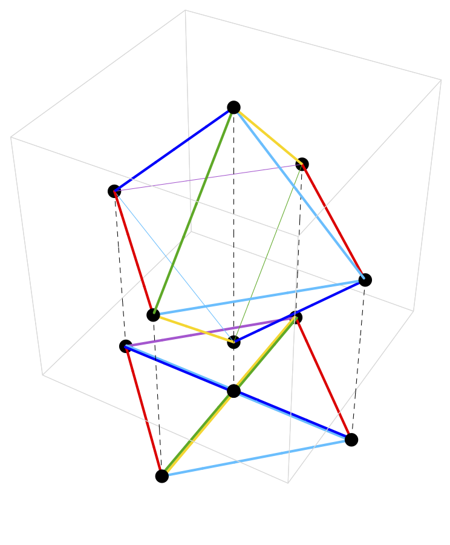

Supersymmetric Spectroscopy with Spectral Network
Chan Y. Park
Rutgers University
Mar. 04, 2016 @ Imperial
- K. Hori, CYP, Y. Tachikawa, arXiv:1309.3036
- K. Maruyoshi, CYP, W. Yan, arXiv:1309.3050
- P. Longhi, CYP, arXiv:1601.02633
- P. Longhi, CYP, arXiv:16XX.XXXXX
Experimental-Mathematical-Computational-Theoretical-Physics!
- Recent development in both hardware and software of computational tools enabled us to study physical and mathematical problems by combining analytical and numerical methods together, which is proven to be complementary to the traditional pen-and-paper approach for various topics including
- Modern conformal bootstrap using crossing symmetry of 4pt function to derive bounds on spectrum in OPE of fields. [Rattazzzi, Rychkov, Tonni, Vichi (2008)], ...
- Using modular invariance of torus amplitude of 2d CFT to obtain bounds on spectrum. [Hellerman (2009)], ...
- Evaluating leading terms in series expansions of supersymmetric partition functions and indices.
- And many more...
Why Python?
- Open-source
- Can look into what's going on in the box (if you want)
- A type of software license that goes well with academic researches
- Active and helpful Python community
- Diverse and powerful libraries, including a suite of scientific libraries a.k.a ScyPy stack
- SymPy for symbolic math
- NumPy for numerical computation
- SciPy for scientific computation
- matplotlib for visualization
- And more...
- SAGE for extensive math library
Spectroscopy we learned at high school
- A flame test is a qualitative method to identify an element.

Cu
Na - An emission spectrum is used to quantitatively distinguish different elements.
Cu
Na
Supersymmetric spectroscopy
via spectral network
- Using spectral network, we can get the BPS spectrum of a 4d \(\cN = 2\) theory of class S on the Coulomb branch, as well as that of a 2d \(\cN = (2, 2)\) theory of a surface defect of the 4d theory.
- We use the BPS spectrum to identify what such a theory is, which is useful when the theory is strongly coupled and we lack any perturbative approach to understand it.

spectral network

2-way streets
2-way streets

4d central charges

2d solitons
Spectral network of class S theory
Outline
- Introduction
- 4d \(\cN = 2\) theory of class S
- ADE spectral network
- Applications of spectral network
- 2d SCFTs from surface defects of 4d \(\cN = 2\) theory of class S
- BPS spectrum of pure gauge theory with \(G = \SU(N),\ \SO(2N),\ \gE_6,\ \gE_7\)
- \(\gD_N\)-class Argyres-Douglas fixed point theory
4d \(\cN = 2\) Theory of Class S
4d \(\cN = 2\) \( \mathrm{SU}(N) \) theory of class S
- When we wrap \( N \) M5-branes on a punctured Riemann surface \(C\), we obtain a 4d \(\mathcal{N}=2\) \( \mathrm{SU}(N) \) theory of class S. [Gaiotto (2009)], [Gaiotto, Moore, Neitzke (2009)]
- In the Coulomb branch of a class S theory, the multiple M5-branes merge into a single M5-brane wrapping a complex 1-dimensional curve \( \Sigma \), \[ f(z, x)=0,\ z \in C, \] called a Seiberg-Witten curve or an IR curve, which is a multi-sheeted cover \(\{ x_{i = 1, \ldots, N} \}\) over \(C\), a UV curve.
- \( \Sigma \) determines the low-energy effective action of the theory. [Seiberg, Witten (1994)]
BPS states of 4d \(\mathcal{N} = 2\) \( \mathrm{SU}(N) \) theory
- A BPS state of the theory is identified with an M2-brane ending along a 1-cycle \(\gamma\) of the Seiberg-Witten curve \(\Sigma\), \[ \gamma \in H_1(\Sigma; \mathbb{Z}). \] [Henningson, Yi (1997)], [Mikhailov (1997)]
- Its mass is given by integrating a 1-form \[ \lambda = x\, \mathrm{d} z \] called Seiberg-Witten differential, along \(\gamma\), \[ M = |Z|,\ Z = \oint_\gamma \lambda. \]
- The boundary of the M2-brane satisfies a differential equation that depends on \(\lambda\) and \(\theta = \arg(Z)\), the phase of the central charge of the BPS state. [Klemm, Lerche, Mayr, Vafa, Warner (1996)]
- Gaiotto, Moore, and Neitzke extended this construction and introduced \(\mathcal{S}\)-walls and spectral networks
4d \(\mathcal{N} = 2\) ADE class S theory
Spectral cover \(\Sigma_\rho\)
- When a 6d \(\mathcal{N} = (2, 0)\) theory with \(\fg = \gA_n,\ \gD_n,\ \gE_6\), or \(\gE_7\) is compactified on a punctured Riemann surface \(C\), we obtain a 4d \(\mathcal{N} = 2\) class S theory whose Coulomb branch consists of degree-\(w_i\) differentials \[ \phi_{w_i}(z) = f_{w_i}(z)\, dz^{w_i},\ z \in C, \] where \(w_i\) is the degree of the \(i\)-th Casimiar invariants of \(\mathfrak{g}\).
- For a \(d\)-dimensional minuscule representation \(\rho\) of \(\mathfrak{g}\), we define a spectral cover \( \Sigma_\rho \), \[ \Sigma_\rho = \left\{ \lambda\, \big|\, \det \left[ \lambda\, I_d - \rho(\varphi(z)) \right] = 0 \right\} \subset T^*C, \] where \(\varphi(z)\) is a \(\mathfrak{t}/W\)-valued 1-form field whose Casimirs are \( \phi_{w_i}(z) \), and \(\mathfrak{t}\) and \(W\) are the Cartan subalgebra and the Weyl group of \(\mathfrak{g}\), respectively.
Sheets of the cover correspond to weights of \(\rho\)
- There is a natural projection map \(\pi:\Sigma_{\rho}\rightarrow C\) that presents \(\Sigma_\rho\) as a ramified \(d\)-sheeted covering of \(C\).
- Denoting the weights of \(\rho\) by \(\nu_j,\ (j = 1, \ldots, d)\), the sheets above a generic \(z \in C\) are \[\begin{align} \pi^{-1}(z) &= \Big\{ \lambda \in T^{*}C \,\Big|\, \prod_{j = 1}^{d} \left(\lambda - x_j(z)\,\mathrm{d} z \right) = 0 \Big\}, \\ x_j(z)\,\mathrm{d} z &= \langle \nu_j, \varphi(z) \rangle \in \mathbb{C}, \end{align}\] where \(\langle\cdot,\cdot\rangle\) denotes the natural pairing of \(\mathfrak{t}^{*}\) and \(\mathfrak{t}\).
Branch points/cuts correspond to elements of \( W(\mathfrak{g}) \)
- Assume that we trivialized the spectral cover, i.e. we ordered the eigenvalues of \(\rho(\varphi)\) on \(C \setminus \{ \text{branch points and cuts}\}\).
- Monodromy of \(\varphi\) around a square-root branch point is given by a Weyl reflection \(w_\alpha\) of a root \(\alpha \in \Phi(\mathfrak{g})\), thereby corresponding to a face of a fundamental Weyl chamber.
- A higher order branch point corresponds to an edge or the vertex of a fundamental Weyl chamber.
- With a mild confusion, a square-root branch point is labeled by a root \(\alpha \in \Phi(\mathfrak{g})\), and a higher-order branch point is labeled by an ordered set of roots.
Example: \(\mathfrak{g} = \mathrm{A}_2,\ \dim(\rho) = 3\)
\[\begin{align} \Sigma_\rho: &(\lambda - x_1(z)\dd z)(\lambda - x_2(z)\dd z)(\lambda - x_3(z)\dd z) = \\ &= \lambda^3 + \phi_2(z) \dd z^2 \lambda + + \phi_3(z) \dd z^3 = 0. \end{align}\]ADE Spectral Network
How to construct an ADE spectral network
- An \(\cS\)-wall is
- sourced by either a branch point (primary) or a joint (descendant),
- labled by a root,
- grown according to \[\begin{align} &\partial_{t} \lambda_\alpha = \partial_{t} \langle\alpha,\varphi\rangle = \partial_{t} \langle\nu_i - \nu_j,\varphi\rangle = \\ &= (x_i - x_j) \frac{\partial z}{\partial t} = e^{i\vartheta}. \end{align}\]
- There is a joint iff the two \(\cS\)-walls carry roots that sum up to a root.
- A one-way street \(p\) is a segment of an \(\cS\)-wall delimited by branch points or joints.
- A spectral network \(\cW_\vartheta\) is a network of \(\cS\)-wall for a given \(\vartheta\).

Physical data from an ADE spectral network
2d defect of 4d ADE class S theory
- For a 4d \(\cN = 2\) ADE class S theory we can define a 2d surface defect \(\bS_{z_0, \rho}\) for \(z_0 \in C\) and a minuscule representation \(\rho\) of \(\fg\), which is a half-BPS object and preserves \(\cN = (2, 2)\) SUSY.
- When \(z_0\) is away from a branch point, \(\bS_{z_0, \rho}\) has \(\dim(\rho)\) distinct massive vacua.
- A finite \(\cS_{\alpha}\)-wall from a branch point at $z_\mathrm{b}$ to $z=z_0$ gives a 2d BPS soliton that interpolates two ground states $(z_0, x_i)$ and $(z_0, x_j)$
- The central charge of the 2d BPS state is \[\begin{align*} Z = \int_{\tau_b}^{\tau_s} \lambda_{\alpha}(t) \frac{\partial t}{\partial \tau} d\tau = \int_{\tau_b}^{\tau_s} e^{i\theta} d\tau, \end{align*}\] where the branch point is at $z(\tau_b)$ and $z(\tau_s) = z_0$.
2d soliton data
- \(\cS_\alpha\)-wall carries a 2d soliton data \[\begin{align} &\left\{\left. (a,\mu(a))\, \right|\, a\in \Gamma(p), \mu(a)\in\bZ \right\},\\ &\Gamma(z_1) :=\bigcup_{(i,j)\in\cP_\alpha} \Gamma_{ij}(z_1),\\ &\cP_\alpha = \left\{ \left. (i, j)\, \right|\, \nu_j - \nu_i = \alpha \right\}, \end{align}\] where \(\Gamma_{ij}(z_1)\) is a set of (\(\bZ_2\)-extended, \(\ker(Z)\)-equivalent classes of) relative homology classes of open paths on \(\Sigma_\rho\).
- 2d \(\cN=(2,2)\) theory on a surface defect \(\bS_{z_1, \rho}\) has a soliton \(a\) with \(\mu(a) = +1\), and \(\bS_{z_3, \rho}\) has a soliton \(c\) with \(\mu(c) = \mu(a) \cdot \mu(b) = +1\).
- \(\mu(a) / \mu(a') = (-1)^{w(a, a')}\)

Symmetry of 2d solitons
- Let \(z\) be on a street of \(\cS_{\alpha}\), and let \((i,j), (i',j') \in \cP_{\alpha}\) be two distinct pairs. Then, for any soliton \(a \in \Gamma_{ij}(z)\), there is another soliton \(a' \in \Gamma_{i'j'}(z)\) with
- \(Z_{a'}=Z_{a}\),
- \(\mu(a')=\mu(a)\),
- supported on the same soliton tree \(\mathcal{T}_a\).
- Solitons are symmetric under the permutations of the pairs in \(\cP_{\alpha}\), i.e. the symmetry group is \(S_{k_\rho}\) where \(k_\rho = \left| \cP_\alpha \right|\).

\(\cK\)-wall jump of \(\cW\)
- For a one-parameter family of spectral networks, \(\cW_\vartheta\), there is \(\vartheta = \vartheta_\text{c}\) where a spectral network undergoes a topological jump, called a \(\cK\)-wall jump.
- At \(\vartheta = \vartheta_\text{c}\) a two-way street \(p\) appears.
- We can construct a sub-network \(\cW_\text{c}\) that consists of two-way streets of \(\cW_\vartheta\) only.

4d BPS state
- For a two-way street \(p\), calculate \[ Q(p) = 1+\sum_{\substack{\overline{a}\in\Gamma_{ij}(p)\\ \overline{b}\in\Gamma_{ji}(p)}}\mu(a)\mu(b)\,X_{\mathrm{cl}(ab)} = \prod_{n=1}^{\infty}\big(1 + X_{{n\overline{\gamma}_\mathrm{c}}}\big)^{\alpha_{{n{\gamma_\mathrm{c}}}}(p)}, \alpha_{{\gamma}}(p)\in\bZ. \]
- For a \(\gamma = n \gamma_\text{c}\) obtain a (closed and oriented) path on \(\Sigma_\rho\), \[ L({\gamma}) :=\sum_{p\in\cW_\mathrm{c}}\alpha_{{\gamma}}(p)\,\pi^{-1}(p). \]
- The DSZ pairing of two 4d charges is \[ \langle \gamma, \gamma' \rangle_{\text{DSZ}} = (1/k_\rho) \langle L(\gamma), L(\gamma') \rangle. \]
- The 4d BPS index of \(\gamma\) is \[ \Omega(\gamma) = [L(\gamma)]/\check{\gamma}, \] where \([L(\gamma)]\), \(\check{\gamma}\) are 1-cycles corresponding to \(L(\gamma)\) and \(\gamma\), respectively. Each of them is an orbit of a closure of a pair of 2d solitons under the permutation symmetry \(S_{k_\rho}\).
Example: a single hypermultiplet
- Consider \(\fg = \gD_4\), \(\dim(\rho) = 4\). Then \[\begin{align} \cP_\alpha &= \{(12),(34)\},\ \cP_{-\alpha} = \{(21),(43)\}.\\ Q(p) &= 1+ X_{a_{12}}X_{b_{21}} = 1+ X_{a_{34}}X_{b_{43}} \\ &= 1 + X_{\overline{\gamma}} \Rightarrow \alpha_{\gamma} = 1.\\ L({\gamma}) &= p^{(2)}-p^{(1)} + p^{(4)}-p^{(3)}.\\ \Omega({\gamma}) &= [L({\gamma})]/ \check{\gamma} = 1, \end{align}\] where \(\check{\gamma} = \check{\gamma}_{12}+ \check{\gamma}_{34}\) and \[ \overline{\gamma}_{12} = \text{cl}(a_{12} b_{21}),\ \overline{\gamma}_{34} = \text{cl}(a_{34} b_{43}). \]
Applications of Spectral Network
2d SCFTs from Surface Defects
- We can identify the 2d theory of a certain surface defect \(\bS_{z_0, \rho}\) by studying the structure of its ground state and BPS spectrum using spectral network.
- When $z_0$ is at a branch point of an ADE spectral cover, the IR 2d theory on the defect is a Kazama-Suzuki coset model that admits a Landau-Ginzburg description. [Hori, CYP, Tachikawa (2013)], [Longhi, CYP (2016)] \[\begin{align*} \begin{array}{c|c} \hline G_k/H & c_{G_k/H} \\ \hline \SU(n+m)_k/\SU(m) \times SU(n) \times \UU(1) & 3kmn/(k+m+n) \\ \SO(n+2)_k/\SO(n) \times SO(2) & 3kn/(k+n),\ n \geq 2 \\ \color{gray}{\SO(3)_k/\SO(2)} & \color{gray}{3kn/(k+2)} \\ \SO(2n)_k/\SU(n) \times \UU(1) & 3kn(n-1)/2(k+2n-2) \\ \color{gray}{\Sp(2n)_k/\SU(n) \times \UU(1)} & \color{gray}{3kn(n+1)/2(k+n+1)} \\ (\gE_6)_k/\SO(10) \times \UU(1) & 48k/(k+12) \\ (\gE_7)_k/\gE_6 \times \UU(1) & 81k/(k+18) \\ \hline \end{array} \end{align*}\]
M2-branes ending near a ramification point of M5-branes
- Configuration of branes: \(k\) M2-branes between an M5-brane wrapping a curve \(F(z, x)\) and an M5' at \(z = z_0\), where \(x=X^4+i\,X^5\) and \(z=\exp(X^7+i\,X^{10})\).
- A flat M2-brane corresponds to a ground state of the 2d \(\mathcal{N}=(2,2)\) theory, and an M2-brane interpolating two ground states gives a BPS state of the 2d theory. [Hanany, Hori (1997)], [Dorey (1998)]
- When we move the M2-brane endpoint onto a ramification point of the M5, the BPS state becomes massless. [Gaiotto, Moore, Neitzke (2011)]
2d $\mathcal{N}=(2,2)$ theory from multiple M2-branes
- The 2d theory from the $k$ M2-branes between the M5$'$ and the M5-brane wrapping a Seiberg-Witten curve \[\begin{align*} F(z, x) = x^N + (z - z_0) \end{align*}\] is described by a 2d $\cN=(2,2)$ Landau-Ginzburg model with chiral fields $X_1,\ldots,X_k$ and superpotential $W=W(X_1,\ldots,X_k)$, where \[\begin{gather*} W(X_1,\ldots,X_k) = \sum_{b = 1}^{k} \frac{\sigma_b^{N+1}}{N+1} + (z - z_0) \sigma_b,\ X_b = \sum_{a_1 < \cdots < a_b} \prod_{i = 1}^{b}\sigma_{a_i},\ b = 1, \ldots, k. \end{gather*}\] [Hori, CYP, Tachikawa (2013)]
- This LG model flows in the IR to a superconformal Kazama-Suzuki model with coset \[\begin{align*} \frac{G}{H} = \frac{\SU(N)_1}{\mathrm{S} \left[\UU(k) \times \UU(N-k) \right]}. \end{align*}\] [Kazama, Suzuki (1988)], [Lerche, Vafa, Warner (1989)] [Gepner (1991)]
- When $k=1$ it reduces to an $A_{N}$ minimal model SCFT, which is the IR limit of LG model with $W(X) = \frac{X^{N+1}}{N+1}$. [Tong (2006)]
Evidence for the claim
- Number of ground states
- The number of ground states of the 2d theory from the brane configuration is $\binom{N}{k}$ due to the $s$-rule. [Hanany, Witten (1996)], [Hanany, Hori (1997)]
- The space of supersymmetric ground states of the LG model is naturally identified with the $k^\mathrm{th}$ fundamental representation $\omega_k = \wedge^k \mathbf{C}^N$ of $\SU(N)$, whose dimension is $\binom{N}{k}$. [Lerche, Vafa, Warner (1989)]
- $k \leftrightarrow N-k$ duality
- The 2d theory from the brane configuration has a duality of $k \leftrightarrow N-k$ from the Hanany-Witten transition. [Hanany, Witten (1996)]
- The coset model is symmetric under $k \leftrightarrow N-k$: $\frac{G}{H} = \frac{\SU(N)_1}{\mathrm{S} \left[\UU(k) \times \UU(N-k) \right]}$
- We can match the BPS spectrum of the 2d theory from the brane configuration with the BPS spectrum of a Landau-Ginzburg model with the most relevant deformation $(z - z_0) X_1$. [Fendley, Mathur, Vafa, Warner (1990)] [Fendley, Lerche, Mathur, Warner (1991)], [Lerche, Warner (1991)]
Ground states and solitons of the 2d theory
- Ground states: weights of $\rho$.
- Solitons: roots connecting the weights.
- To obtain the central charges of the solitons,
- Project the weight space onto the Coxeter plane, which is the eigenspace of the Coxeter element $S$, a product of all simple Weyl reflections of the Weyl group of $\mathfrak{g}$ with eigenvalue $\exp(2\pi i/g^{\vee})$, where $g^{\vee}$ is the dual Coxeter number of $\mathfrak{g}$.
- Identified the Coxeter plane with the $W$-plane of the 2d theory and read out the central charge of a soliton by measuring its projection on the plane.
$N = 2, k = 1$
$N = 3, k = 1$

$N = 3, k = 2$
$N = 3, k = 2$
Example: spectral network of $\frac{\SU(4)_1}{\mathrm{S} \left[\UU(3) \times \UU(1) \right]}$
Pure gauge theories
- A 4d \(\cN = 2\) pure gauge theory with \(G = \SU(N),\, \SO(2N),\, \gE_6\), or \(\gE_7\) is described by \[ \phi_{k}(z) = u_k \left(\frac{\dd z}{z}\right)^k,\quad \phi_{h^\vee}(z) = \left( \mu^{h^\vee} z + u_{h^\vee} + \frac{\mu^{h^\vee}}{z} \right) \left(\frac{\dd z}{z}\right)^{h^\vee}, \] where \(\{u_k\}\) are Coulomb branch parameters and \(h^\vee\) is the dual Coxeter number of \(G\). [Martinec, Warner (1995)] [Keller, Mekareeya, Song, Tachikawa (2011)]
- At the origin of the Coulomb branch, \(u_k = 0\), there are two branch points whose ramification structure is given by the Coxeter element of \(W(\fg)\), and from each branch point \(\cS\)-walls of all root type emanates.
- As we vary \(\vartheta\) from \(0\) to \(\pi\), there is a \(\cK\)-wall jump for each root of \(\fg\), leading to the BPS spectrum of a hypermultiplet for every root of \(\fg\), which is consistent with BPS quiver analysis. [Alim, Cecotti, Cordova, Espahbodi, Rastogi, Vafa (2011)] [Longhi, CYP (2016)]
\(SU(2)\)
\(SO(8)\)
4d \(\cN=2\) SCFT at Argyers-Douglas fixed point
from 6d \(\cN = (2,0)\) theory
- When a 4d \(\cN = 2\) theory has mutually nonlocal massless states in the IR limit, it flows to an interacting SCFT. [Argyres, Douglas (1995)], [Argyres, Plesser, Seiberg, Witten (1995)]
- Compactifying the 6d \(\cN = (2,0)\) \(\gA_n\) theory on a Riemann sphere with an irregular puncture leads to a 4d \(\cN=2\) SCFT of Argyres-Douglas type. [Gaiotto, Moore, Neitzke (2009)], [Cecotti, Neitzke, Vafa (2010)], [Alim, Cecotti, Cordova, Espahbodi, Rastogi, Vafa (2011)], [Bonelli, Maruyoshi, Tanzini (2012)], [Xie (2013)]
- The theory on the Coulomb branch of an SCFT from an Argyres-Douglas fixed point has massive BPS states that become mutually nonlocal and massless when we flow the theory to the fixed point.
- By studying the spectral network of the theory, we can find such BPS states.
\(\gD_N\)-class Argyres-Douglas fixed point theory
- The AD fixed point of a 4d \(\cN=2\) \(\SO(2N)\) pure gauge theory is claimed to be equivalent to that of a 4d \(\cN=2\) \(\SU(N)\), \(N_\mathrm{f} = 2\) theory. [Eguchi, Hori, Ito, Yang (1996)]
- At a point in the Coulomb branch moduli space where the number of BPS states is minimal, their BPS spectrum can be conveniently encoded into the BPS quiver that has the shape of a $\mathrm{D}_{N}$ Dykin diagram, and the fixed point theory (and its deformations) is termed a \(\mathrm{D}_{N}\)-class theory. [Maruyoshi, CYP, Yan (2013)]
- Using spectral networks of a \(\mathrm{D}_{N}\)-class theory from the 4d \(\cN=2\) \(\SO(8)\) pure gauge theory, we can find that its BPS spectra across different chambers in the Coulomb branch moduli space are the same as those of a \(\mathrm{D}_{N}\)-class theory from the 4d \(\cN=2\) \(\SU(N)\), \(N_\mathrm{f} = 2\) theory. [Longhi, CYP (2016)]
\(\gD_4\)-class AD theory with \(\mathfrak{g} = \gD_{N}\)
- The Seiberg-Witten curve of a \(\mathrm{D}_{4}\)-class theory with \(\mathfrak{g} = \gD_{N}\) is \(\lambda^8 + \phi_2 \lambda^6 + \phi_4 \lambda^4 + \phi_6 \lambda^2 + (\tilde{\phi}_4)^2\) with \[\begin{align} \phi_{2} = s_{2} (\dd z)^{2},\ \phi_{4} = s_{4} (\dd z)^{4},\ \phi_{6} = \left( s_{6} + z^2 \right) (\dd z)^{6},\ \tilde{\phi}_4 = \tilde{s}_4 (\dd z)^{4}. \end{align}\]
- The flavor symmetry is enhanced to \(\SU(3)\) when \(s_4 = {s_2^2}/{4}\) and \(\tilde{s}_4 = 0\), then we can rescale the curve to absorb \(s_2\), therefore the theory has a complex 1-dimensional moduli space determined by \(s = s_6/(s_2)^3\).
- By studying the discriminant of the curve, we find that there are two singularities at \(s = s_\mathrm{t},\ s_\mathrm{s}\). Using spectral networks, we find that at \(s = s_\mathrm{t}\) three BPS states, a triplet of the flavor symmetry \(\SU(3)_\mathrm{f}\), become massless, and at \(s = s_\mathrm{s}\) a flavor singlet BPS state becomes massless.
In the minimal BPS chamber


In the maximal BPS chamber

Future directions
- For a non-minuscule representation \(\rho\) and/or a non-simply-laced \(\fg\), study
- 2d theory on a defect \(\bS_{z, \rho}\) and its BPS spectrum, and
- ABCDEFG spectral networks.
- Cameral cover, defect, and spectral networks.
- Use ADE spectral networks to generate BPS quivers of 4d ADE class S theories.